Getting Started Guide
For Use with Red Hat Single Sign-On 7.3
Abstract
Chapter 1. Overview
The purpose of this guide is to get you up and running as quickly as possible so that you can play with and test-drive various features that Red Hat Single Sign-On has. It relies heavily on the default database and server configuration and does not cover any complex deployment options. If you want a more in-depth discussion of any features or configuration options, consult the various reference guides available.
Red Hat Single Sign-On is based on the open source Keycloak community project, which has its documentation here.
Chapter 2. Installing and Booting
This very short tutorial walks you through booting up the server in standalone mode, setting up the initial admin user, and logging into the Red Hat Single Sign-On admin console.
2.1. Installing the Server
The Red Hat Single Sign-On Server is contained in one distribution file:
- 'rh-sso-7.3.0.GA.GA.zip'
This file can be downloaded in the Red Hat customer portal Downloads.
The 'rh-sso-7.3.0.GA.GA.zip' file is the server-only distribution. It contains only the scripts and binaries to run the Red Hat Single Sign-On server.
To unpack these files run the unzip or gunzip utilities.
2.2. Booting the Server
To boot the Red Hat Single Sign-On server, go to the bin/ directory of the server distribution.
Standalone Boot Scripts
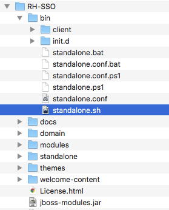
To boot the server:
Linux/Unix
$ .../bin/standalone.sh
Windows
> ...\bin\standalone.bat
2.3. Creating the Admin Account
After the server boots, open your browser and go to the http://localhost:8080/auth URL. The page should look like this:
Welcome Page
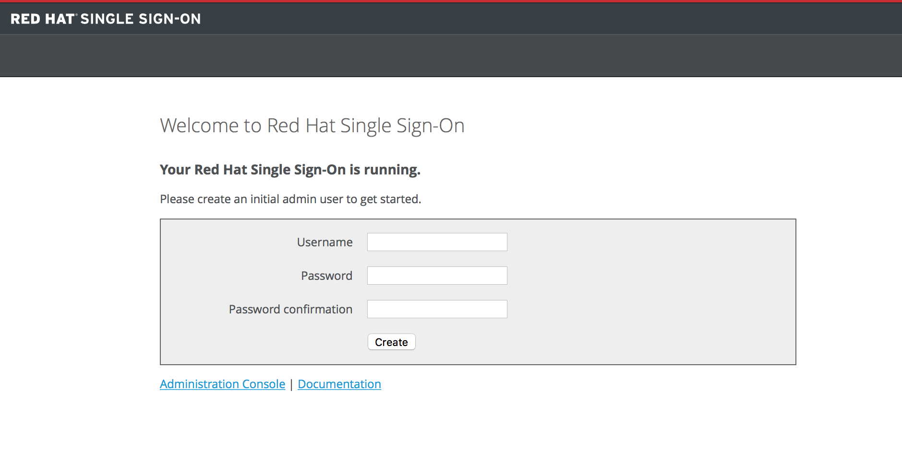
Red Hat Single Sign-On does not have a configured admin account by default. You must create one on the Welcome page. This account will allow you to create an admin that can log into the master realm’s administration console so that you can start creating realms and users and registering applications to be secured by Red Hat Single Sign-On.
You can only create an initial admin user on the Welcome Page if you connect using localhost. This is a security precaution. You can also create the initial admin user at the command line with the add-user-keycloak.sh script. For more details see Server Installation and Configuration Guide and Server Administration Guide.
2.4. Logging in to the Admin Console
After you create the initial admin account, you can log in to the Admin Console by completing the following steps:
At the bottom of the Welcome page click the Administration Console link. Alternatively you can go to the console URL directly at http://localhost:8080/auth/admin/
Login Page
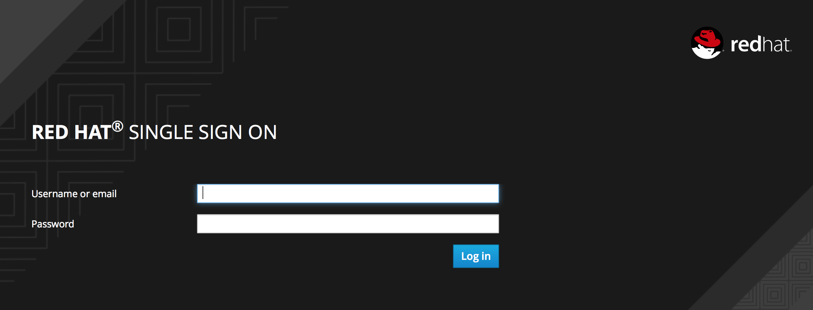
Type the username and password you created on the Welcome page. The Red Hat Single Sign-On Admin Console page opens.
Admin Console

If you are curious about a certain feature, button, or field within the Admin Console, hover your mouse over the question mark ? icon. This will pop up tooltip text to describe the area of the console you are interested in. The image above shows the tooltip in action.
Chapter 3. Creating a Realm and User
This short tutorial walks you through creating a new realm within the Red Hat Single Sign-On Admin Console and adding a new user to that realm. With that new user you will log into your new realm and visit the built-in User Account service that all users have access to.
3.1. Before You Start
Before you can participate in this tutorial, you need to complete the installation of Red Hat Single Sign-On and create the initial admin user as shown in the Installing and Booting tutorial.
3.2. Creating a New Realm
To create a new realm, complete the following steps:
Log in to the Red Hat Single Sign-On Admin Console using the account you created in the Install and Boot tutorial.
- Admin Console Link
- http://localhost:8080/auth/admin/
In the top left corner dropdown menu that is titled
Master, click Add Realm. If you are logged in to the master realm this dropdown menu lists all the realms created. The Add Realm page opens.Add Realm Menu
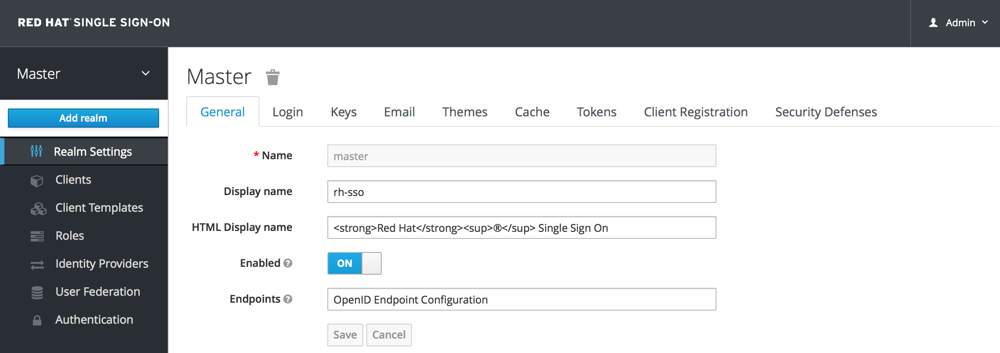
You will be creating a brand new realm from scratch so type
demofor the realm name and clickCreate.Create Realm
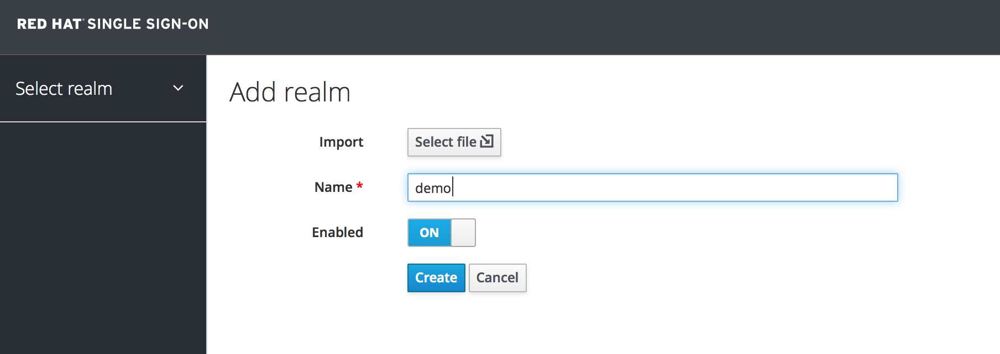
After creating the realm the main Admin Console page opens. The current realm is now set to demo. You can switch between managing the master realm and the realm you just created by clicking the top left corner dropdown menu.
3.3. Creating a New User
To create a new user in the demo realm as well as a temporary password for that account, complete the following steps:
In the left menu bar click Users. The user list page opens.
Users
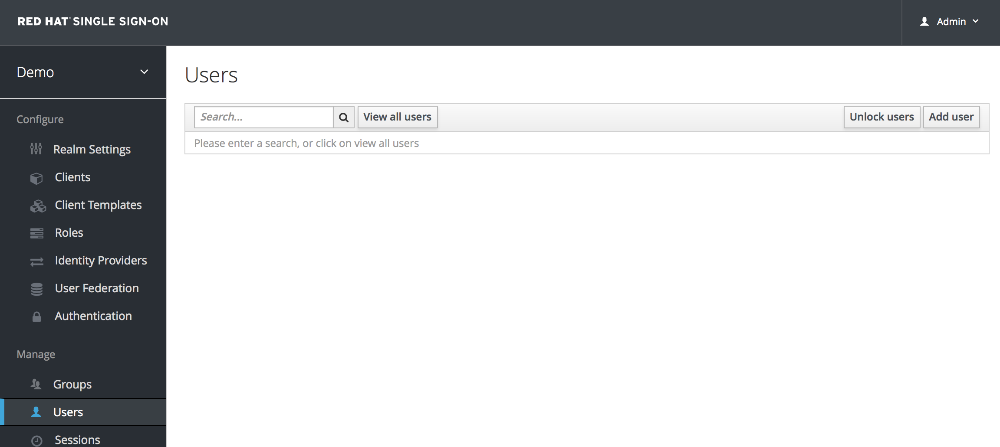
On the right side of the empty user list, click Add User.
Add User
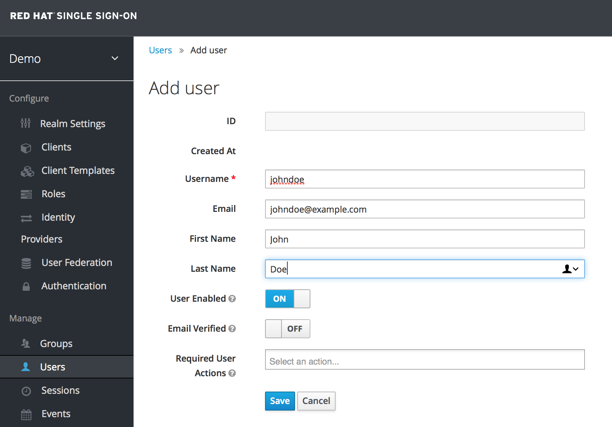
-
The only required field is
Username. When you are finished, click Save. The management page for your new user opens. The next step is to define a temporary password for your new user. Click the Credentials tab.
Set Temporary Password
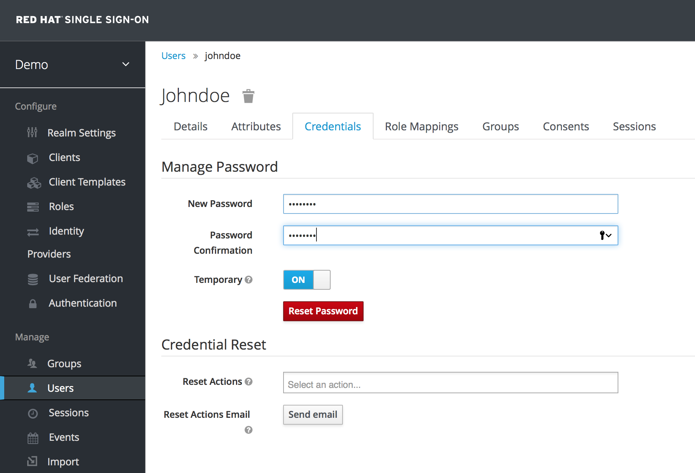
- Type a new password and confirm it. A red Reset Password button is displayed.
- Click Reset Password to reset the user password to the new one you specified.
This password is temporary and the user will be required to change it after first login. You can make it permanent by flipping the Temporary switch from On to Off before clicking Reset Password.
3.4. User Account Service
- After creating the user, log out of the management console by clicking the right dropdown menu and selecting Sign Off.
Log in to the User Account Service of your
demorealm with the user you just created by clicking this link:- User Account Link
- http://localhost:8080/auth/realms/demo/account
Type the username and password you created previously. You must create a permanent password after you successfully log in if you didn’t toggle the Temporary switch to Off previously.
Update Password
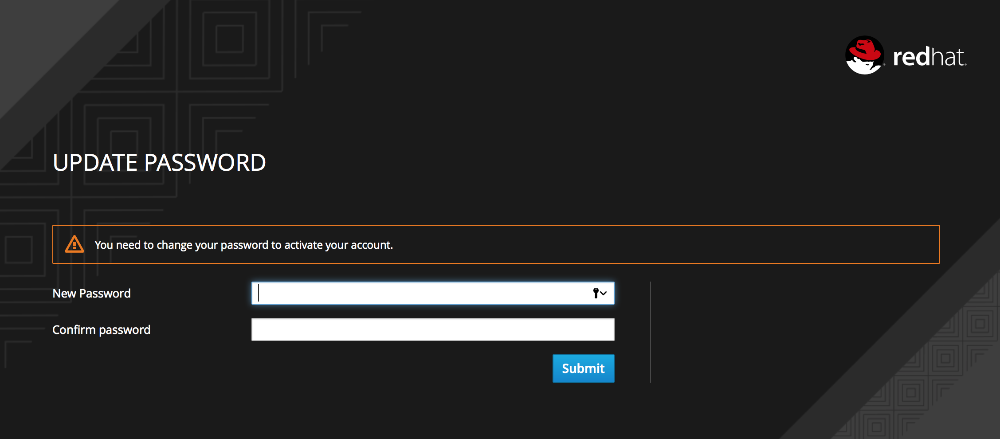
The User Account Service page opens. Every user in a realm has access to this Account Service by default. You can update profile information and change or add additional credentials. For more information on this service see the Server Administration Guide.
Chapter 4. Securing a JBoss Servlet Application
In this section you will learn how to secure a Java Servlet application on the JBoss EAP application server. You will learn how to install the Red Hat Single Sign-On Client Adapter onto a JBoss EAP application server distribution. You will create and register a client application in the Red Hat Single Sign-On Admin Console. Finally, you will configure the application to be secured by Red Hat Single Sign-On.
4.1. Before You Start
Before you can participate in this tutorial, you need to complete the installation of Red Hat Single Sign-On and create the initial admin user as shown in the Installing and Booting tutorial. There is one caveat to this. You have to run a separate JBoss EAP instance on the same machine as the Red Hat Single Sign-On server. This separate instance will run your Java Servlet application. Because of this you will have to run the Red Hat Single Sign-On under a different port so that there are no port conflicts when running on the same machine. Use the jboss.socket.binding.port-offset system property on the command line. The value of this property is a number that will be added to the base value of every port opened by the Red Hat Single Sign-On server.
To boot the Red Hat Single Sign-On server:
Linux/Unix
$ .../bin/standalone.sh -Djboss.socket.binding.port-offset=100
Windows
> ...\bin\standalone.bat -Djboss.socket.binding.port-offset=100
After booting up Red Hat Single Sign-On, you can then access the admin console at http://localhost:8180/auth/admin/
4.2. Installing the Client Adapter
Download the JBoss EAP distribution and unzip it into a directory on your machine.
Next download the RH-SSO-7.3.0.GA-eap7-adapter.zip distribution.
Unzip this file into the root directory of your JBoss EAP distribution.
Next perform the following actions:
WildFly 10 and Linux/Unix
$ cd bin $ ./jboss-cli.sh --file=adapter-install-offline.cli
WildFly 10 and Windows
> cd bin > jboss-cli.bat --file=adapter-install-offline.cli
This script will make the appropriate edits to the …/standalone/configuration/standalone.xml file of your app server distribution. Finally, boot the application server.
Linux/Unix
$ .../bin/standalone.sh
Windows
> ...\bin\standalone.bat
4.3. Downloading, Building, and Deploying Application Code
The project and code for the application you are going to secure is available in Red Hat Single Sign-On Quickstarts Repository. You will need the following installed on your machine and available in your PATH before you can continue:
- Java JDK 8
- Apache Maven 3.1.1 or higher
- Git
You can obtain the code by cloning the repository at https://github.com/redhat-developer/redhat-sso-quickstarts. Use the branch matching the version of Red Hat Single Sign-On in use.
Follow these steps to download the code, build it, and deploy it. Make sure your JBoss EAP application server is started before you run these steps.
Clone Project
$ git clone https://github.com/redhat-developer/redhat-sso-quickstarts $ cd redhat-sso-quickstarts/app-profile-jee-vanilla $ mvn clean wildfly:deploy
You should see some text scroll down in the application server console window. After the application is successfully deployed go to:
Application Login Page
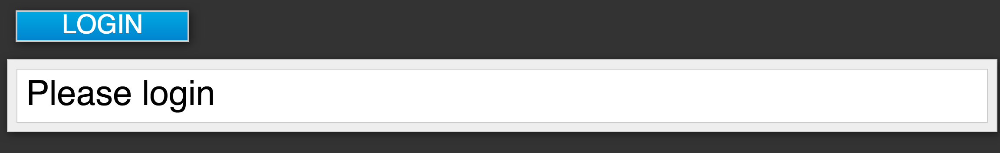
If you open up the application’s web.xml file you would see that the application is secured via BASIC authentication. If you click on the login button on the login page, the browser will pop up a BASIC auth login dialog.
Application Login Dialog
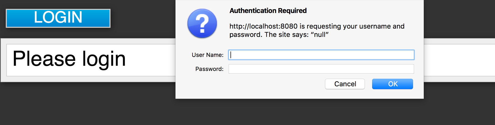
The application is not secured by any identity provider, so anything you enter in the dialog box will result in a Forbidden message being sent back by the server. The next section describes how you can take this deployed application and secure it.
4.4. Creating and Registering the Client
The next step you have to do is to define and register the client in the Red Hat Single Sign-On Admin Console.
- Log into the Admin Console with your admin account as you did in previous tutorials.
In the top left dropdown menu select and manage the
demorealm. ClickClientsin the left side menu. The Clients page opens.Clients

- On the right click Create.
Complete the fields as shown below:
Add Client
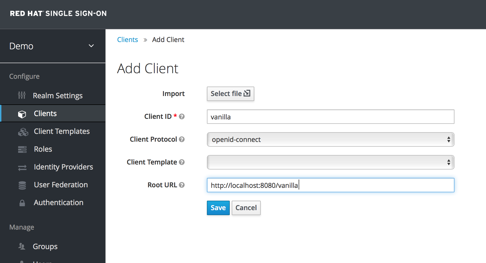
After clicking the
Savebutton your client application entry will be created. You now have to go back to the JBoss EAP instance that the application is deployed on and configure it so that this app is secured by Red Hat Single Sign-On. You can obtain a template for the configuration you need by going to theInstallationtab in the client entry in the Red Hat Single Sign-On Admin Console.Installation Tab
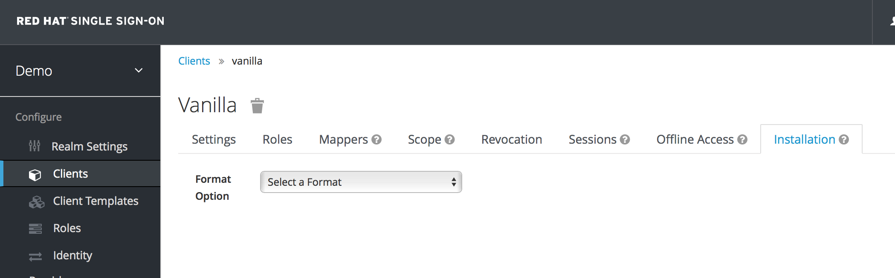
Select Keycloak OIDC JBoss Subsystem XML. An XML template is generated that you’ll need to cut and paste.
Template XML

4.5. Configuring the Subsystem
Now that you have copied the XML template from the Installation page, you need to paste this into the standalone.xml file that resides in the standalone/configuration directory of the application server instance on which your application is deployed.
Open the standalone/configuration/standalone.xml file and search for the following text:
<subsystem xmlns="urn:jboss:domain:keycloak:1.1"/>
Modify this to prepare it for pasting in your template from the Installation page:
<subsystem xmlns="urn:jboss:domain:keycloak:1.1"> </subsystem>
Within the <subsystem> element, paste in the template. It will look something like this:
<subsystem xmlns="urn:jboss:domain:keycloak:1.1"> <secure-deployment name="WAR MODULE NAME.war"> <realm>demo</realm> <auth-server-url>http://localhost:8180/auth</auth-server-url> <public-client>true</public-client> <ssl-required>EXTERNAL</ssl-required> <resource>vanilla</resource> </secure-deployment> </subsystem>Change the WAR MODULE NAME text to vanilla as follows:
<subsystem xmlns="urn:jboss:domain:keycloak:1.1"> <secure-deployment name="vanilla.war"> ... </subsystem>
- Reboot your application server.
- Go to http://localhost:8080/vanilla and click login. The Red Hat Single Sign-On login page opens. You can log in using the user you created in the Creating a New User chapter.